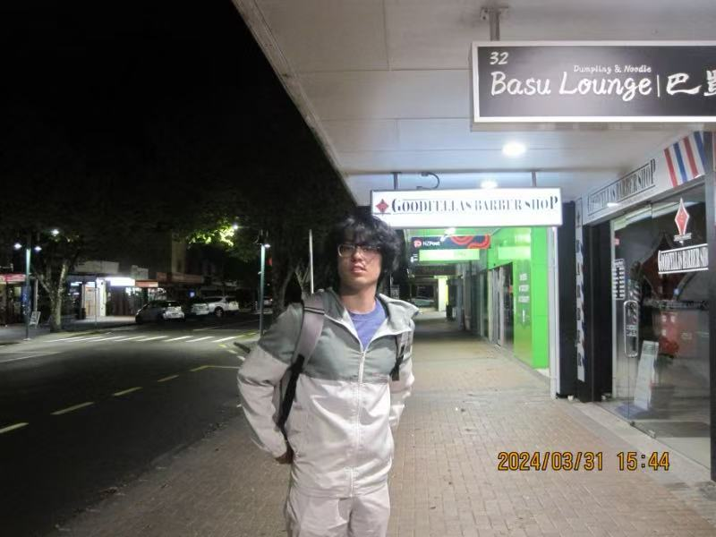

|
Haosen Zhang (张昊森)
Haosen Zhang is currently an MRes (Master of Research) student at Imperial College London,
conducting research in AYangLab under the supervision of
Dr. Guang Yang.
My research interests lie broadly in Computer Vision, with a particular focus on MRI reconstruction and the integration of multi-modal foundation models for medical image understanding and restoration.
Email: haosen.zhang24 [at] imperial.ac.uk
Github
Google Scholar
CV
|

|
|
Selected Publications
(* denotes equal contribution)
|
|
|
Lightweight Hypercomplex MRI Reconstruction: A Generalized Kronecker-Parameterized Approach
Haosen Zhang,
Jiahao Huang*,
Yinzhe Wu*,
Congren Dai,
Fanwen Wang,
Zhenxuan Zhang,
Guang Yang
MICCAI MLMI 2025 (Oral Presentation)
paper
/
code
Proposed a lightweight MRI reconstruction framework using Kronecker-Parameterized Hypercomplex Networks,
including Kronecker MLP, Window Attention, and Convolution modules. Designed Kronecker U-Net and SwinMR
models that reduce parameters by ∼50% while maintaining high-quality reconstructions, demonstrating strong
generalization under limited data and high acceleration.
|
|
|
Towards Universal Learning-based Model for Cardiac Image Reconstruction: Summary of the CMRxRecon2024 Challenge
Fanwen Wang*,
Fanwen Wang, Zi Wang, Yan Li, Jun Lyu, Chen Qin, Shuo Wang, Kunyuan Guo, Mengting Sun, Mingkai Huang,
Haoyu Zhang, Michael Tanzer, Qirong Li, Xinran Chen, Jiahao Huang, Yinzhe Wu, Haosen Zhang, Kian Anvari Hamedani, ¨
Yuntong Lyu, Longyu Sun, Qing Li, Ziqiang Xu, Bingyu Xin, Dimitris N. Metaxas Fellow, IEEE, Narges
Razizadeh, Shahabedin Nabavi, George Yiasemis, Jonas Teuwen, Zhenxi Zhang, Sha Wang, Chi Zhang, Daniel B.
Ennis, Zhihao Xue, Chenxi Hu, Ruru Xu, Ilkay Oksuz, Donghang Lyu, Yanxin Huang, Xinrui Guo, Ruqian Hao,
Jaykumar H. Patel, Guanke Cai, Binghua Chen, Yajing Zhang, Sha Hua, Zhensen Chen, Qi Dou, Xiahai Zhuang
Senior Member, IEEE, Qian Tao, Wenjia Bai Senior Member, IEEE, Jing Qin Senior Member, IEEE, He Wang,
Claudia Prieto, Michael Markl, Alistair Young, Hao Li, Xihong Hu, Lianmin Wu, Xiaobo Qu Senior Member,
IEEE, Guang Yang Senior Member, IEEE, Chengyan Wang
Under Review, Nature Machine Intelligence
website
/
paper
/
code
|
|
|
RSFR: A Coarse-to-Fine Reconstruction Framework for Diffusion Tensor Cardiac MRI with Semantic-Aware Refinement
Jiahao Huang*, Fanwen Wang, Pedro F. Ferreira, Haosen Zhang, Yinzhe Wu, Zhifan Gao, Lei Zhu, Angelica I. Aviles-Rivero, Carola-Bibiane Schonlieb, Andrew D. Scott, Zohya Khalique, Maria Dwornik, Ramyah Rajakulasingam, Ranil De Silva, Dudley J. Pennell, Guang Yang, Sonia Nielles-Vallespin
Under Review, Medical Image Analysis
paper
|
|
|
From Coarse to Continuous: Progressive Refinement Implicit Neural Representation for Motion-Robust Anisotropic MRI Reconstruction
Zhenxuan Zhang*, Lipei Zhang, Yanqi Cheng, Zi Wang, Fanwen Wang, Haosen Zhang, Yue Yang, Yinzhe Wu, Jiahao Huang, Angelica I Aviles-Rivero, Zhifan Gao, Guang Yang, Peter J. Lally
Under Review, Transactions on Image Processing
paper
|
|
{kind=link}